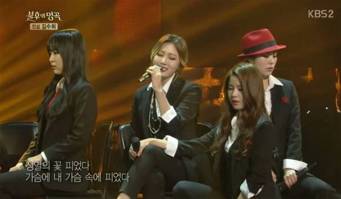

About the group "Mamamoo"
Now that you know a little more about the members, it is time to talk about Mamamoo as a whole. They been trough a lot but they made it because of them and who they are as a person and as a group. They have helped a lot of people, because they are not affraid to talk about complecated subjects. They really uplift women and think this is very important especially with how guarded the Korean culture is.

Mamamoo
Mamamoo is a 4 member girlgroup that is founded by RBW (Rainbow Bridge World) entertainment company. Mamamoo consist of Solar (Vocalist & leader), Moonbyul (Rapper & performer), Wheein (Vocalist & performer) and Hwasa (Vocalist, Rapper and Maknae). The group is highly known for their talent and copetents of wide (large) variety of diffrent music genres.The group is also known for there amazing harmonies. Mamamoo debuted on June 19 2014 with the song Mr Ambiguous that was released on June 18 2014. They have almost written every song themselves and in the beginning of their career, they also had to make their own choreography.
Immortal singers
On this show Mamamoo was the first Kpop group to participate. Before Mamamoo it was mainly a lot of musical stars, trot singers and solo artists that are known for there amazing voice. People didn't have high expectations when they saw a kpop group, but when they started to sing everyone became a fan. Mamamoo opened the door for other Kpop idols to join this program.
Fans (MooMoo's)
Mamamoo is very close to there fans and really think this is importent. There fans buy all there products and support them even if they have made a mistake or 2. In South Korea it is normal to hold a fan meeting, when your in a group and even if your a soloist. Because of there relatable sencse, fans tent to feel close to them because they can see themselves in them
Mememoo
Mamamoo is also really known for there funny and relatable personalitys. When Mamamoo are on a shows, if they have there fan sighning or even on their concerts, they will have moments that are super iconic. A lot of there iconic moments are later made in to memes, by there fans.